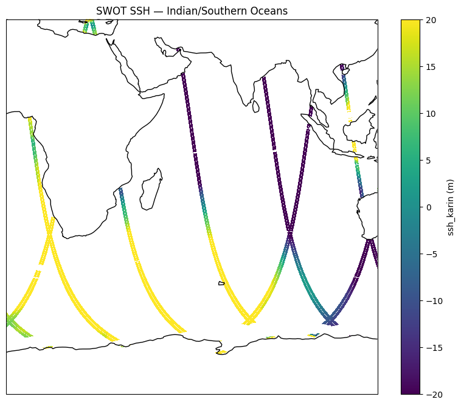
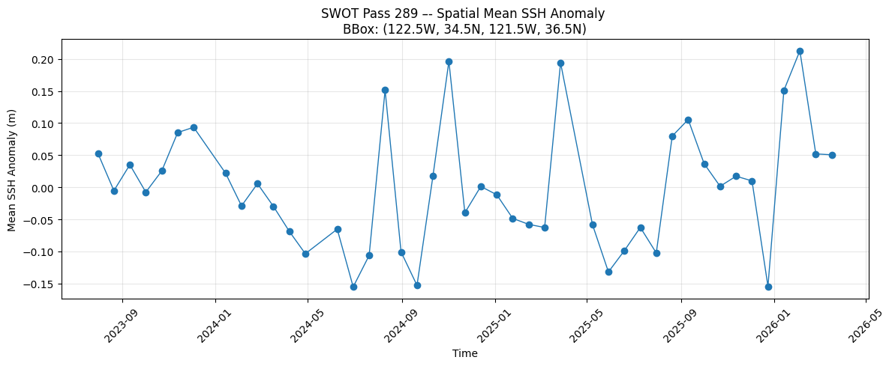
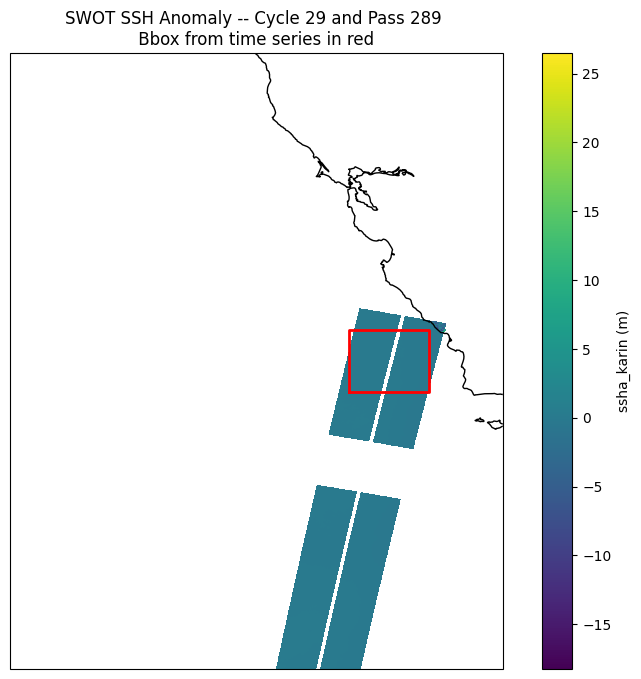

# install these versions as needed. Create a seperate environment for these dependencies and run it from there.
#!pip install earthaccess==0.16.0 xarray==2025.1.2 zarr==2.18.6 fsspec>=2025.2 numpy virtualizarr==1.3.2 "numcodecs<0.16.0" kerchunk==0.2.7Virtual dataset reader and plotter
Example for NASA CMR Shortname: SWOT_L2_LR_SSH_Basic_D
Necessary enviroment includes
earthaccess 0.16.0
fsspec 2025.9.0
kerchunk 0.2.7
numpy 2.3.3
xarray 2025.1.2
zarr 2.18.6
pip list | grep -E -e '(^xarray|numpy|earthaccess|fsspec|zarr|kerchunk)'if: Expression Syntax.
then: Command not found.
earthaccess 0.16.0
fsspec 2026.3.0
kerchunk 0.2.7
numpy 2.2.4
virtualizarr 1.3.2
xarray 2025.1.2
zarr 2.18.6
Note: you may need to restart the kernel to use updated packages.# Filesystem management
import fsspec
import earthaccess
# Data handling
import xarray as xr
import zarr
# Numpy
import numpy as np
# Other mapping
import matplotlib.pyplot as plt
import cartopy.crs as ccrs1. Earthdata Cloud authentication
# Get Earthdata creds
earthaccess.login()<earthaccess.auth.Auth at 0x107bd2ea0>2. Perform CMR search request and Open VDS reference file
%%time
# Do a simple CMR granule search. We need the results of the granule search to establish AWS credentials if reading the VDS
# in the cloud. Otherwise ignore
lat_min, lat_max = -80, 20
lon_min, lon_max = 0, 120
start_time = '2025-05-10T00:28:00'
end_time = '2025-05-10T23:28:00'
short_name = 'SWOT_L2_LR_SSH_Basic_D'
granule_result = earthaccess.search_data(
short_name=short_name,
temporal=(start_time, end_time),
bounding_box=(lon_min, lat_min, lon_max, lat_max)
)
print(len(granule_result))14
CPU times: user 13.9 ms, sys: 4.18 ms, total: 18.1 ms
Wall time: 1.05 s2a. VDS wrapper function for access in cloud or out of cloud
# Open data using the reference file, using a small wrapper function around xarray's open_dataset.
# This will shorten code blocks in other sections.
def get_vds_mapper(vds_link, in_cloud_region=False):
"""
Produces a virtudal dataset mapper that can be passed to xarray.
* vds_link: str, link to the mapper
* in_cloud_region: bool, True if in cloud in the same region as the data,
False otherwise.
"""
if in_cloud_region:
#fs_data = earthaccess.get_s3_filesystem(daac="PODAAC")
fs_data = earthaccess.get_s3_filesystem(results=granule_result)
remote_protocol = "s3"
else:
fs_data = earthaccess.get_fsspec_https_session()
# We set this header to identify usage of the VDS. This helps us support continued development.
fs_data.client_kwargs['headers']['User-Agent'] = "virtual-dataset-consumer"
remote_protocol = "https"
storage_opts = {"fo": vds_link, "remote_protocol": remote_protocol, "remote_options": fs_data.storage_options}
fs_ref = fsspec.filesystem('reference', **storage_opts)
return fs_ref.get_mapper('')2b. Open VDS as xarray dataset
%%time
# Path to VDSs, both HTTPS and S3 versions
vds_link= 'https://archive.podaac.earthdata.nasa.gov/podaac-ops-cumulus-public/virtual_collections/SWOT_L2_LR_SSH_Basic_D/SWOT_L2_LR_SSH_Basic_D_virtual_https.json'
#vds_link= 'https://archive.podaac.earthdata.nasa.gov/podaac-ops-cumulus-public/virtual_collections/SWOT_L2_LR_SSH_Basic_D/SWOT_L2_LR_SSH_Basic_D_virtual_s3.json'
# Lets open the JSON VDS as xarray dataset
vds_mapper = get_vds_mapper(vds_link, in_cloud_region=False)
## No modification needed!
data_vds = xr.open_dataset(
vds_mapper, engine="zarr", chunks={},
backend_kwargs={"consolidated": False}
)
data_vds
#print(data)CPU times: user 2.69 s, sys: 529 ms, total: 3.22 s
Wall time: 11 s<xarray.Dataset> Size: 3TB
Dimensions: (granule: 26175, num_lines: 9866,
num_pixels: 69, num_sides: 2)
Coordinates:
cycle (granule) float64 209kB dask.array<chunksize=(26175,), meta=np.ndarray>
filename (granule) object 209kB dask.array<chunksize=(26175,), meta=np.ndarray>
* granule (granule) float64 209kB nan ... 2....
latitude (granule, num_lines, num_pixels) float64 143GB dask.array<chunksize=(1, 9866, 69), meta=np.ndarray>
longitude (granule, num_lines, num_pixels) float64 143GB dask.array<chunksize=(1, 9866, 69), meta=np.ndarray>
orbit (granule) datetime64[ns] 209kB dask.array<chunksize=(26175,), meta=np.ndarray>
ppass (granule) float64 209kB dask.array<chunksize=(26175,), meta=np.ndarray>
Dimensions without coordinates: num_lines, num_pixels, num_sides
Data variables: (12/24)
ancillary_surface_classification_flag (granule, num_lines, num_pixels) float32 71GB dask.array<chunksize=(1, 9866, 69), meta=np.ndarray>
distance_to_coast (granule, num_lines, num_pixels) float64 143GB dask.array<chunksize=(1, 9866, 69), meta=np.ndarray>
dynamic_ice_flag (granule, num_lines, num_pixels) float32 71GB dask.array<chunksize=(1, 9866, 69), meta=np.ndarray>
geoid (granule, num_lines, num_pixels) float64 143GB dask.array<chunksize=(1, 9866, 69), meta=np.ndarray>
heading_to_coast (granule, num_lines, num_pixels) float64 143GB dask.array<chunksize=(1, 9866, 69), meta=np.ndarray>
height_cor_xover (granule, num_lines, num_pixels) float64 143GB dask.array<chunksize=(1, 9866, 69), meta=np.ndarray>
... ...
ssha_karin (granule, num_lines, num_pixels) float64 143GB dask.array<chunksize=(1, 9866, 69), meta=np.ndarray>
ssha_karin_2 (granule, num_lines, num_pixels) float64 143GB dask.array<chunksize=(1, 9866, 69), meta=np.ndarray>
ssha_karin_2_qual (granule, num_lines, num_pixels) float64 143GB dask.array<chunksize=(1, 9866, 69), meta=np.ndarray>
ssha_karin_qual (granule, num_lines, num_pixels) float64 143GB dask.array<chunksize=(1, 9866, 69), meta=np.ndarray>
time (granule, num_lines) datetime64[ns] 2GB dask.array<chunksize=(1, 9866), meta=np.ndarray>
time_tai (granule, num_lines) datetime64[ns] 2GB dask.array<chunksize=(1, 9866), meta=np.ndarray>
Attributes: (12/22)
Conventions: CF-1.7
title: Level 2 Low Rate Sea Surface Height Dat...
institution: CNES
source: Ka-band radar interferometer
platform: SWOT
reference_document: D-56407_SWOT_Product_Description_L2_LR_SSH
... ...
xref_param_l2_lr_precalssh_file: SWOT_Param_L2_LR_PreCalSSH_20000101T000...
xref_reforbittrack_files: SWOT_RefOrbitTrack125mPass1_Nom_2000010...
xref_geco_database_version: v107
ellipsoid_semi_major_axis: 6378137.0
ellipsoid_flattening: 0.0033528106647474805
references: V1.4.1print(data_vds.isel(granule=26174).filename.values)SWOT_L2_LR_SSH_Basic_048_283_20260406T224034_20260406T233202_PID0_01.nc# number of orbits
data_vds.dims["granule"]/var/folders/c4/bkn3x29559ggcdlgd9grtx4m0000gp/T/ipykernel_71055/869051093.py:2: FutureWarning: The return type of `Dataset.dims` will be changed to return a set of dimension names in future, in order to be more consistent with `DataArray.dims`. To access a mapping from dimension names to lengths, please use `Dataset.sizes`.
data_vds.dims["granule"]26175# find the unique orbits.. user needs to track the non-unique ones
n_orbits = np.unique(data_vds.orbit.values).size
print(n_orbits)255313. Perform data discovery, masking and plots
3a. Use case 1: Parse granule metadata from CMR search request to find the start times of the orbits and use to subset into the VDS, mask and plot
# Do a CMR granule search and find the orbits in a specific space/time window. SWOT is 0-360 in longitude.
# This bbox for Indian/Southern Ocean
lat_min, lat_max = -80, 20
lon_min, lon_max = 0, 120
start_time = '2025-05-10T00:28:00'
end_time = '2025-05-10T23:28:00'
short_name = 'SWOT_L2_LR_SSH_Basic_D'
#short_name = 'SCATSAT1_ESDR_L2_WIND_STRESS_V1.1'
granule_result = earthaccess.search_data(
short_name=short_name,
temporal=(start_time, end_time),
bounding_box=(lon_min, lat_min, lon_max, lat_max)
)
print(len(granule_result))14# Get granule start times from CMR granule search result. Will be used to subset into the VDS:
datetimes_str = [g['umm']['TemporalExtent']['RangeDateTime']['BeginningDateTime'][:-1] for g in granule_result] # -1 to remove "Z" at end.
datetimes_obj = [np.datetime64(dts) for dts in datetimes_str]
#print(datetimes_obj)# Subset into VDS ---- THIS DOES NOT WORK....the orbits represented by datetime_obj are not consecutive....re indexing does not work
#data_vds_subset = data_vds.sel(orbit = datetimes_obj)
#data_vds_subset# Mask (and subset)the entire VDS with the orbits found from the CMR space/time query and granule metadata parsing for start times
mask = data_vds.orbit.isin(datetimes_obj).compute()
data_vds_subset = data_vds.where(mask, drop=True)
data_vds_subset<xarray.Dataset> Size: 2GB
Dimensions: (granule: 14, num_lines: 9866,
num_pixels: 69, num_sides: 2)
Coordinates:
cycle (granule) float64 112B 32.0 ... 32.0
filename (granule) object 112B 'SWOT_L2_LR_...
* granule (granule) float64 112B 1.657e+04 ....
latitude (granule, num_lines, num_pixels) float64 76MB dask.array<chunksize=(1, 9866, 69), meta=np.ndarray>
longitude (granule, num_lines, num_pixels) float64 76MB dask.array<chunksize=(1, 9866, 69), meta=np.ndarray>
orbit (granule) datetime64[ns] 112B 2025...
ppass (granule) float64 112B 340.0 ... 3...
Dimensions without coordinates: num_lines, num_pixels, num_sides
Data variables: (12/24)
ancillary_surface_classification_flag (granule, num_lines, num_pixels) float32 38MB dask.array<chunksize=(1, 9866, 69), meta=np.ndarray>
distance_to_coast (granule, num_lines, num_pixels) float64 76MB dask.array<chunksize=(1, 9866, 69), meta=np.ndarray>
dynamic_ice_flag (granule, num_lines, num_pixels) float32 38MB dask.array<chunksize=(1, 9866, 69), meta=np.ndarray>
geoid (granule, num_lines, num_pixels) float64 76MB dask.array<chunksize=(1, 9866, 69), meta=np.ndarray>
heading_to_coast (granule, num_lines, num_pixels) float64 76MB dask.array<chunksize=(1, 9866, 69), meta=np.ndarray>
height_cor_xover (granule, num_lines, num_pixels) float64 76MB dask.array<chunksize=(1, 9866, 69), meta=np.ndarray>
... ...
ssha_karin (granule, num_lines, num_pixels) float64 76MB dask.array<chunksize=(1, 9866, 69), meta=np.ndarray>
ssha_karin_2 (granule, num_lines, num_pixels) float64 76MB dask.array<chunksize=(1, 9866, 69), meta=np.ndarray>
ssha_karin_2_qual (granule, num_lines, num_pixels) float64 76MB dask.array<chunksize=(1, 9866, 69), meta=np.ndarray>
ssha_karin_qual (granule, num_lines, num_pixels) float64 76MB dask.array<chunksize=(1, 9866, 69), meta=np.ndarray>
time (granule, num_lines) datetime64[ns] 1MB dask.array<chunksize=(1, 9866), meta=np.ndarray>
time_tai (granule, num_lines) datetime64[ns] 1MB dask.array<chunksize=(1, 9866), meta=np.ndarray>
Attributes: (12/22)
Conventions: CF-1.7
title: Level 2 Low Rate Sea Surface Height Dat...
institution: CNES
source: Ka-band radar interferometer
platform: SWOT
reference_document: D-56407_SWOT_Product_Description_L2_LR_SSH
... ...
xref_param_l2_lr_precalssh_file: SWOT_Param_L2_LR_PreCalSSH_20000101T000...
xref_reforbittrack_files: SWOT_RefOrbitTrack125mPass1_Nom_2000010...
xref_geco_database_version: v107
ellipsoid_semi_major_axis: 6378137.0
ellipsoid_flattening: 0.0033528106647474805
references: V1.4.1Mask the SSH data for a valid range
# Perform SSH variable maskings for the large numeric "fill_values" and other assignments
ssh = data_vds_subset.ssh_karin
ssh = ssh.where(ssh < 1000)
lat = data_vds_subset.latitude
lon = data_vds_subset.longitudePlot it
%%time
fig = plt.figure(figsize=(10, 8))
ax = plt.axes(projection=ccrs.PlateCarree())
ax.set_extent([lon_min, lon_max, lat_min, lat_max])
ax.coastlines()
for k in range(ssh.sizes["granule"]):
ssh_i = ssh.isel(granule=k).load()
lat_i = lat.isel(granule=k).load()
lon_i = lon.isel(granule=k).load()
pcm = ax.pcolormesh(
lon_i,
lat_i,
ssh_i,
shading="auto",
cmap="viridis",
vmin=-20,
vmax=20,
transform=ccrs.PlateCarree()
)
plt.colorbar(pcm, ax=ax, label="ssh_karin (m)")
plt.title("SWOT SSH — Indian/Southern Oceans")
plt.show()
CPU times: user 13.3 s, sys: 1.71 s, total: 15 s
Wall time: 45.4 s3b. Use case 2: Find all the cycles/passes over a specific (small) region and create an average SSHA time series plot.
We will choose pass 289 over a region off central California around 123W, 34N, 121W, 36N
target_pass = 289
ds = data_vds.where(data_vds.ppass.compute() == target_pass, drop=True)
ds<xarray.Dataset> Size: 5GB
Dimensions: (granule: 45, num_lines: 9866,
num_pixels: 69, num_sides: 2)
Coordinates:
cycle (granule) float64 360B 1.0 ... 47.0
filename (granule) object 360B 'SWOT_L2_LR_...
* granule (granule) float64 360B 154.0 ... 2...
latitude (granule, num_lines, num_pixels) float64 245MB dask.array<chunksize=(1, 9866, 69), meta=np.ndarray>
longitude (granule, num_lines, num_pixels) float64 245MB dask.array<chunksize=(1, 9866, 69), meta=np.ndarray>
orbit (granule) datetime64[ns] 360B 2023...
ppass (granule) float64 360B 289.0 ... 2...
Dimensions without coordinates: num_lines, num_pixels, num_sides
Data variables: (12/24)
ancillary_surface_classification_flag (granule, num_lines, num_pixels) float32 123MB dask.array<chunksize=(1, 9866, 69), meta=np.ndarray>
distance_to_coast (granule, num_lines, num_pixels) float64 245MB dask.array<chunksize=(1, 9866, 69), meta=np.ndarray>
dynamic_ice_flag (granule, num_lines, num_pixels) float32 123MB dask.array<chunksize=(1, 9866, 69), meta=np.ndarray>
geoid (granule, num_lines, num_pixels) float64 245MB dask.array<chunksize=(1, 9866, 69), meta=np.ndarray>
heading_to_coast (granule, num_lines, num_pixels) float64 245MB dask.array<chunksize=(1, 9866, 69), meta=np.ndarray>
height_cor_xover (granule, num_lines, num_pixels) float64 245MB dask.array<chunksize=(1, 9866, 69), meta=np.ndarray>
... ...
ssha_karin (granule, num_lines, num_pixels) float64 245MB dask.array<chunksize=(1, 9866, 69), meta=np.ndarray>
ssha_karin_2 (granule, num_lines, num_pixels) float64 245MB dask.array<chunksize=(1, 9866, 69), meta=np.ndarray>
ssha_karin_2_qual (granule, num_lines, num_pixels) float64 245MB dask.array<chunksize=(1, 9866, 69), meta=np.ndarray>
ssha_karin_qual (granule, num_lines, num_pixels) float64 245MB dask.array<chunksize=(1, 9866, 69), meta=np.ndarray>
time (granule, num_lines) datetime64[ns] 4MB dask.array<chunksize=(1, 9866), meta=np.ndarray>
time_tai (granule, num_lines) datetime64[ns] 4MB dask.array<chunksize=(1, 9866), meta=np.ndarray>
Attributes: (12/22)
Conventions: CF-1.7
title: Level 2 Low Rate Sea Surface Height Dat...
institution: CNES
source: Ka-band radar interferometer
platform: SWOT
reference_document: D-56407_SWOT_Product_Description_L2_LR_SSH
... ...
xref_param_l2_lr_precalssh_file: SWOT_Param_L2_LR_PreCalSSH_20000101T000...
xref_reforbittrack_files: SWOT_RefOrbitTrack125mPass1_Nom_2000010...
xref_geco_database_version: v107
ellipsoid_semi_major_axis: 6378137.0
ellipsoid_flattening: 0.0033528106647474805
references: V1.4.1lon_min, lon_max = 237.5, 238.8
lat_min, lat_max = 34.5, 35.5
mask = (
(ds.longitude >= lon_min) & (ds.longitude <= lon_max) &
(ds.latitude >= lat_min) & (ds.latitude <= lat_max)
)ssh = ds.ssha_karin.where(ds.ssha_karin < 1000)
ssh_box = ssh.where(mask)ssh_mean = ssh_box.mean(dim=("num_lines", "num_pixels"), skipna=True)ssh_mean = ssh_mean.assign_coords(time=ds.orbit)
ssh_mean = ssh_mean.swap_dims({"granule": "time"})
ssh_mean = ssh_mean.sortby("time")ssh_ts = ssh_mean.groupby("time").mean()plt.figure(figsize=(12,5))
plt.plot(ssh_ts.time, ssh_ts, marker='o', linewidth=1)
plt.title("SWOT Pass 289 –- Spatial Mean SSH Anomaly \nBBox: (122.5W, 34.5N, 121.5W, 36.5N)")
plt.xlabel("Time")
plt.ylabel("Mean SSH Anomaly (m)")
plt.grid(alpha=0.3)
plt.xticks(rotation=45)
plt.tight_layout()
plt.show()
3c. Use case 3: Spatially plot just a specific cycle/pass from our previous time series (plot one time step)
ds = data_vds.where(
(data_vds.cycle.compute() == 29) & (data_vds.ppass.compute() == 289),
drop=True
)
# find the granule number (index) for this cycle/pass
granule_index = ds.granule.valuesssh = ds.ssha_karin.where(ds.ssh_karin < 1000)
lat = ds.latitude
lon = ds.longitudessh = ssh.squeeze()
lat = lat.squeeze()
lon = lon.squeeze()# swath plot area
lon_min, lon_max = 232, 240
lat_min, lat_max = 30, 40# Do the spatial plot
fig = plt.figure(figsize=(10, 8))
ax = plt.axes(projection=ccrs.PlateCarree())
ax.set_extent([lon_min, lon_max, lat_min, lat_max])
ax.coastlines()
pcm = ax.pcolormesh(
lon,
lat,
ssh,
shading="auto"
)
plt.colorbar(pcm, ax=ax, label="ssha_karin (m)")
plt.xlabel("Longitude")
plt.ylabel("Latitude")
plt.title("SWOT SSH Anomaly -- Cycle 29 and Pass 289 \n Bbox from time series in red ")
plt.grid(alpha=0.3)
# add the orginal bounding box (spatial average) outline
lon_min, lon_max = 237.5, 238.8
lat_min, lat_max = 34.5, 35.5
bbox_lon = [lon_min, lon_max, lon_max, lon_min, lon_min]
bbox_lat = [lat_min, lat_min, lat_max, lat_max, lat_min]
ax.plot(
bbox_lon,
bbox_lat,
color="red",
linewidth=2,
transform=ccrs.PlateCarree()
)
plt.show()